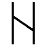
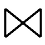
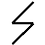
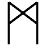
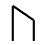
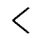
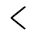
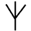
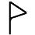

|
PersecutorPersecutor is a long sword crafted by Caradoc Longbeard in the mid 11th century. It was first used by the thegn Cuthwulf against the Druids, and was part of a set which included a chain hauberk, a helm and a shield. Fighting for the glory of Haltan, Cuthwulf was slain in 1061 at the Battle of the Three Lakes. The arms and armour were taken by the Druids, though the sword and shield was retaken by Sihrith, a warrior priestess of Asabeth some seven years later. She and her two sisters had many exploits in Scarondy and Danuch, causing much grief to the Druids. Persecutor was even used to slay a small wyrm, but all three eventually died battling wizards. In 1131, Uwain of the House of Aeddan had possession of the sword. Fighting hopeless odds against the Brytish, he slew himself rather than be captured. Before the eyes of the Brytish, he was reborn fully healed. Taking it as a sign from Voltan, the Brytish spared everyone and left. Uwain of course believed it was a sign from Haltan, and it has been held by the House of Aeddan ever since, being seen as a holy item. Persecutor (Leodhata)     

Persecutor's Helm
Persecutor's Shield 
Persecutor's Cloak
|
|
This page is maintained by
Samuel Penn.
Last updated on 27th March, 2001. |


|